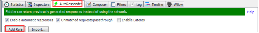
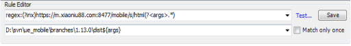
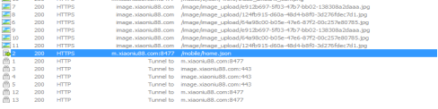
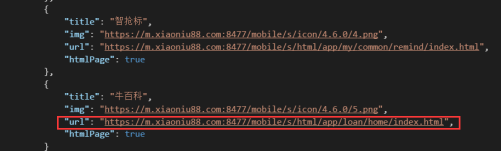

前提：APP是可以调试的包，即可以抓Https
最好开了后门，这样可以随意变换环境，留意最下方彩蛋
线上环境代理本地资源进行调试
——即利用本地文件调试线上接口
操作如下：
- Fiddler面板选中AutoResponser，点击Add Rule添加规则
注意把willow或者switchHost的线上域名代理规则全部取消掉

2.设置规则
第一行设置格式为regex:(?inx)拼接线上资源地址(?<args>.*)
regex:(?inx)https://m.xiaoniu88.com:8477/mobile/s/html(?<args>.*)
第二行点击下拉箭头选择本地build资源的地址 然后拼接${args}
D:\svn\ue_mobile\branches\1.13.0\dist${args}

3.调试某页面
如果有入口，则直接在app点击则会直接代理到本地，进行实时修改
如果没有入口，则需要先配置一个入口
例如在app首页调试我的借款首页，首页的数据接口是home.json

然后选中这条抓包，右键选择save and open as local file
然后修改url为线上的待调试页面地址，无需加参数
例如我的借款首页线上地址为，将牛百科配置为我的借款首页
https://m.xiaoniu88.com:8477/mobile/s/html/app/loan/home/index.html
则改为

以上配置做好后就可以开始调试了
打开app点击牛人圈就是进入到我们配置我的借款主页，发现调用的都是线上接口
当我们线上页面出问题时，我们可以修改本地的代码，然后build一下，接着重新在app打开我们配置的入口，代码改动已经实时生效！！
那么测试环境调试和联调环境调试也是同样的原理，只不过把上面提到的线上环境对应的改为环境调试和联调环境ip即可
PC的页面也可以用此方法代理，方便排查问题。
彩蛋来了--------------------------------------------------------------------------------------------------------------------
app后门的正确打开方式